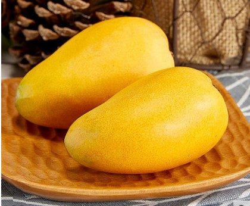
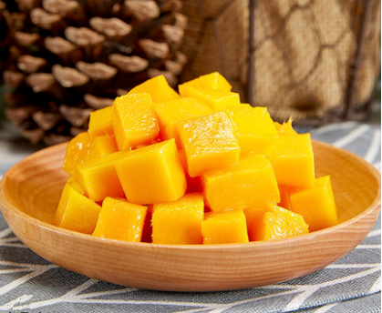
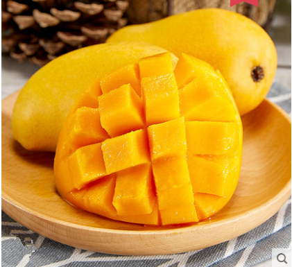
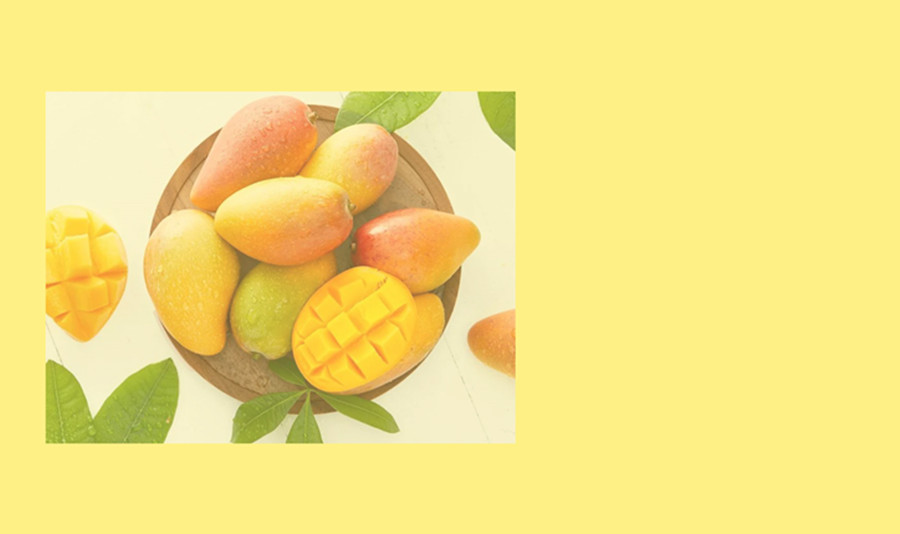
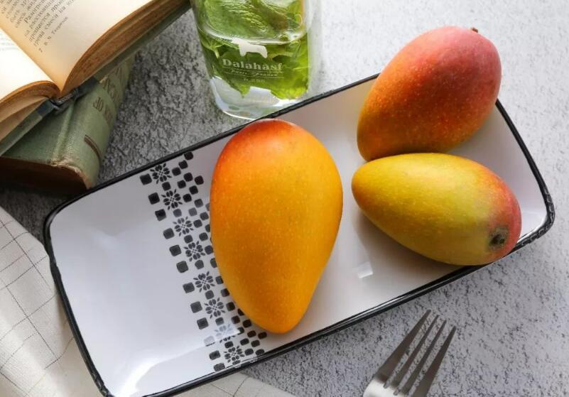
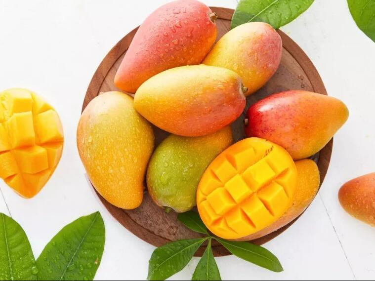
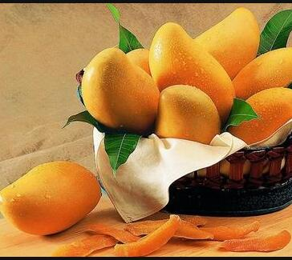
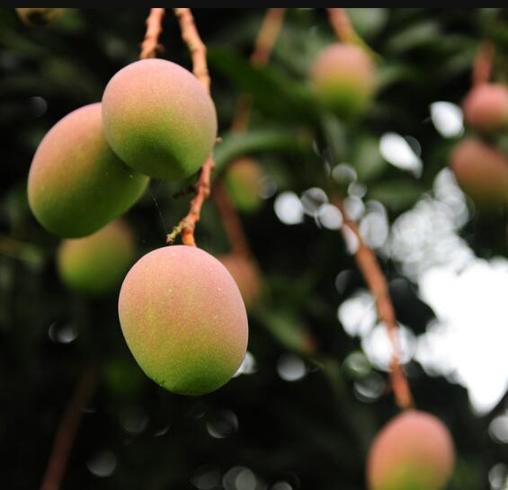
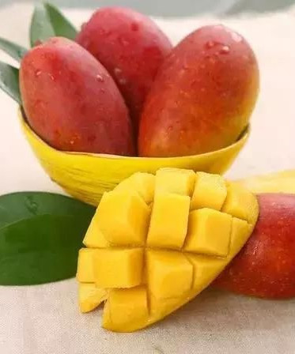
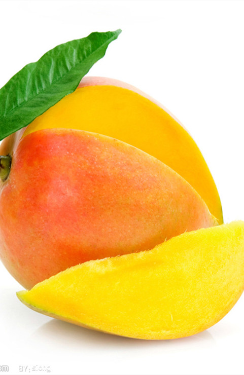

-
欢迎
 Intrerior Design is one of free website templates created by TemplateMonster.com team. This website template is optimized for 1280X1024 screen resolution. It is also XHTML & CSS valid.
This Interior Design Template goes with two packages – with PSD source files and without them. PSD source files are available for free for the registered members of TemplateMonster.com.
- Follow us:


提供
芒果是杧果 (中国植物志)的通俗名(拉丁学名:Mangifera indica L.)，芒果是一种原产印度的漆树科常绿大乔木，叶革质，互生;花小，杂性，黄色或淡黄色，成顶生的圆锥花序。核果大，压扁，长5-10厘米，宽3-4.5厘米，成熟时黄色，味甜，果核坚硬。
芒果为著名热带水果之一，芒果果实含有糖、蛋白质、粗纤维，芒果所含有的维生素A的前体胡萝卜素成分特别高，是所有水果中少见的。其次维生素C含量也不低。矿物质、蛋白质、脂肪、糖类等，也是其主要营养成分。可制果汁、果酱、罐头、腌渍、酸辣泡菜及芒果奶粉、蜜饯等。 -
Our Services
 切成块
常绿大乔木，高10-20米;树皮灰褐色，小枝褐色，无毛。叶薄革质，常集生枝顶，叶形和大小变化较大，通常为长圆形或长圆状披针形，长12-30厘米，宽3.5-6.5厘米，先端渐尖、长渐尖或急尖，基部楔形或近圆形，边缘皱波状，无毛，叶面略具光泽，侧脉20-25对，斜升，两面突起，网脉不显，叶柄长2-6厘米，上面具槽，基部膨大。
更多 放盘子里
枝梢生长习性芒果枝梢呈蓬次式生长，芽由苞片包裹，生长时苞片先绽开，芽梢伸长，叶片开展，苞片随即脱落。中、下部叶片互生，叶距较大。一般苗期和幼树每年抽6-8次梢，幼龄结果树抽2-4次，成龄树1-2次。3-5月抽生的枝梢为春梢，6-8且为夏梢，9-11月为秋梢，12-2月为冬梢。在海南秋梢是主要结果母枝。但春、夏梢也可成为结果母枝，在条件良好的情况下，某些品种在12-1月抽生的冬梢也能开花结果.从芽萌动至枝梢停止生长、叶片老熟历时15-35天。夏、秋梢历时较短，冬梢较长。枝梢生长与根系生长交替进行。
更多 -
    
Projects Gallery
-
桂七芒
又名桂热82号，俗称桂七芒，树势中等，枝条开张花期较迟，属晚熟品种，成熟期8月中、下旬。丰产稳产。鬼泣
-
台农1号
台农一号芒是台湾省风山热带园艺分所用海顿(Hden)和爱文(Irwin)杂交选育的矮生早熟新品种。树矮，节间短，叶窄下，抗风抗病力强，着果率高。小台农
-
青皮芒
泰国白花芒又名青皮芒，原产泰国，其特点是自果实的腹肩至果腹有一条明显的沟槽，果皮多为暗绿色，果肉淡黄色，质腻滑，味浓甜，芳香，纤维少，品质优。青芒
-
金煌芒
金煌芒是台湾自育品种，树势强，树冠高大，花朵大而稀疏。果实特大且核薄，味香甜爽口，果汁多，无纤维，耐贮藏。平均单果重1200克。成熟时果皮橙黄色。金煌芒
-
凯帝芒
凯帝芒原产美国，以高产、优质著称，是美国主要栽培品种之一，也是台湾的主要栽培品种。1991年自美国引入华南热带作物学院，高接树2年即结果，单株产量达10公斤，1993-1994年连续结果，7-8月成熟，单果重约400克，椭圆形，果皮底色黄或橙黄，盖色暗红。果肉厚，质腻滑，纤维少，味甜芳香，品质优良。种子小，仅占果重的7.5-8%，单胚。四川凯蒂
-
-
你看
 种植
农夫芒果的繁殖方法可分为有性繁殖及无性繁殖两种。有性繁殖即用种子播种繁殖，所繁殖的种苗一般习称"宝生苗"。无性繁殖包括嫁接、空中压条及扦插等，一般以嫁接法较为常用。
选择地势较为平坦、向阳、避风的平地或缓坡地。土壤以土层深厚且排水良好富含有机质的砂质壤土为宜。芒果苗圃在整畦时宜注意排水，因为在育苗期的幼苗很怕浸水，连续多日的浸水，易导致幼苗发育不良或死亡。整畦时应视土壤肥力状况，酌施腐熟的有机质肥料及过磷酸钙做基肥。
更多 营养
价值1.芒果的含水量较高，约为82%。每100克含有66千卡热量。未成熟的果子含有淀粉，成熟转为糖。
2.成熟的芒果果肉含糖14%~16%，可溶性固形物15%~24%，另外含有丰富的蛋白质，芒果酮酸、维生素A、维生素B、维生素C、胡萝卜素及多种人体所需要的钙、磷、铁等矿物质和氨基酸。
更多 -
Contact Form
Contact Us
Demolink.org 8901 Marmora Road, Glasgow, D04 89GR.
Telephone: +1 959 552 5963;
E-mail: mail@demolink.org -
学习一下吧
芒果
世界上许多国家都有各自喜爱的芒果品种。泰国人常常爱说自己的芒果是世界上最好的，泰国人喜爱一种叫“婆罗门米亚”的芒果，意思是“卖老婆的婆罗门”，传说有个酷爱芒果的婆罗门竟把老婆卖了买芒果吃，因此得名。印度人把阿方索芒果、佩珊芒果和孟加拉芒果当作珍品。斯里兰卡人喜爱的是鹦鱼芒果和卢比芒果。菲律宾人欣赏的是加拉巴奥芒果，近年来为了做生意，将它改名为马尼拉超级芒果。产地
我国芒果的经济栽培地区有广东、广西、海南、福建、云南、台湾等省区。栽培最多的是海南省的海南岛，分布在陵水、保亭、乐东。东方、昌江、崖县等，目前，年产约500吨。广西的南宁、钦州、百色、玉林；云南的西双版纳、德宏、思茅；福建的安溪、漳州、云霄、厦门等地均有相当产量的芒果。抗癌
据现代食疗观点而言，芒果含有大量的维生素A，因此具有防癌、抗癌的作用。美肤
由于芒果中含有大量的维生素，因此经常食用芒果，可以起到滋润肌肤的作用。